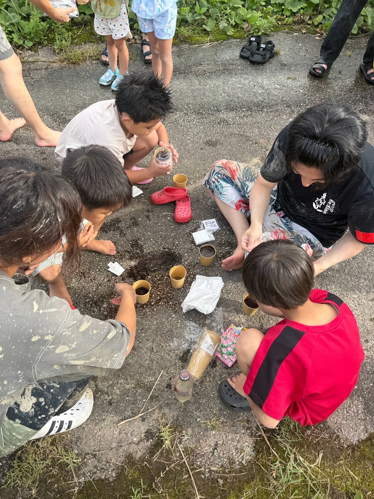
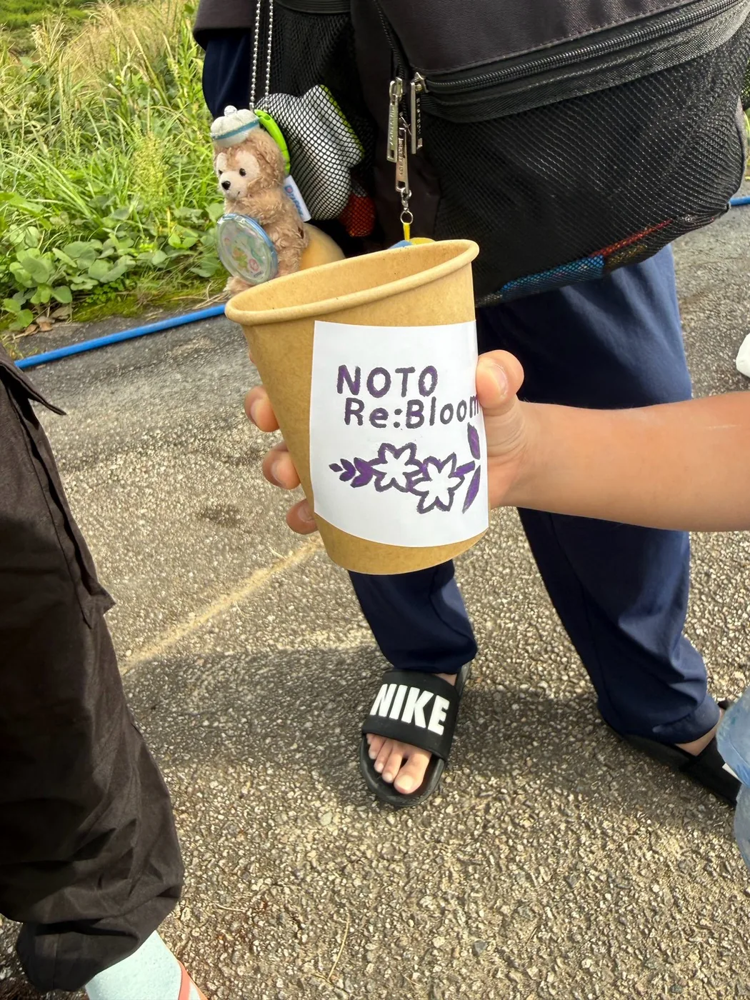

見学を含む総来場者。
EVENT REPORT · 2026.09.20
泥だらけで笑った、
洲巻の一日。
石川県珠洲市若山町洲巻の田んぼで「泥ん子運動会2026」を開催しました。使われなくなっていた土地に人が集まり、泥競技とRe:Bloomレンゲカップを通して、能登に関わる一日をつくりました。

RESULT
企画書の中のアイデアが、
実際の風景になりました。
田んぼの広さ、泥だらけの表情、競技の熱気。9月20日の空気が伝わる当日の写真から、一日を振り返ります。
正式競技への参加者。
予定していた競技をすべて実施。
競技後にレンゲカップを制作。




WHAT HAPPENED
「開催できた」だけではなく、
何が生まれたかを残します。
NOTO Re:Bloomが目指してきた方向から、9月20日に実際に起きたことを整理しました。
使われていなかった農地に、人が集まった。
見学を含めて約30名が会場を訪れ、15名が正式競技に参加。農地が一日だけでも交流の場所になりました。
「楽しい」が入口になった。
子ども、大人、学生、地域の方が同じ田んぼで過ごし、説明会ではなく体験から能登を知る入口をつくりました。
一日で終わらない形を残した。
競技後には5組のレンゲカップを制作。会場の土地も2027年春にレンコン栽培へ活用される予定です。
「楽しそうだから能登へ」が、
実際の一日になりました。
企画の出発点は、地域課題を知っている人だけを集めることではなく、「楽しそう」「泥遊びをしてみたい」という気持ちから能登へ来るきっかけをつくることでした。
5 GAMES
予定していた5競技を、
すべて実施しました。
泥の中ならではの難しさも含めて、勝敗以上に同じ場所で楽しめる時間になりました。
親子お宝ハンター＆玉入れ
泥の中からお宝を探し、親子でつないでカゴを狙う競技。
泥んこ綱引き
足元の不安定さも含めて、田んぼらしさを全身で楽しみました。
泥んこバケツリレー
一列になり、水の入った容器をチームでつなぎました。
泥んこ手押し相撲
泥に足を取られながら向き合う、シンプルで盛り上がる競技。
泥んこドッジボール
柔らかいボールを使い、最後まで田んぼ全体で楽しみました。
DAY FLOW
9月20日の流れ
受付から競技、閉会、レンゲカップまで、当日の流れを記録します。
安全確認とチーム分けを行い、競技を開始。
休憩をはさみながら、正式競技を順番に実施。
得点を集計し、一日の競技を締めくくりました。
競技後も会話と制作を楽しみ、順次解散。
VOICES
数字だけでは残らない、
その日の実感。
終了後に寄せられた声の一部です。
泥バケツリレーが1番楽しかった！ お花のお世話楽しみ！
こんなユニークな経験はなかなかできないので、良い経験になった。とても楽しかった！
TRANSPARENCY
集まった支援を、
どう活動に変えたか。
クラウドファンディングでは10名から186,000円のご支援をいただきました。以下は2026年9月23日に公開した終了報告の収支に基づいています。
収入
クラウドファンディング186,000円
協賛金60,000円
能登クラファン補助金17,000円
自己資金7,000円
合計270,000円
支出
交通・滞在費103,010円
地域への謝礼・お礼70,000円
クラファン関連費38,644円
制作・広報費36,220円
イベント運営費21,635円
合計269,509円
NEXT
この土地は、次の役割へ。
今回使用した土地には、2027年春に震災後初めてレンコンが植えられる予定です。一日のイベントで土地を占有し続けるのではなく、次の使われ方へつながっていくことも、この活動で大切にしている点です。
NOTO Re:Bloomも今回の経験を持って、次は別の耕作放棄地で新しい「関わる理由」をつくることを目指します。

多くの協力があって、
開催できました。
協賛、物品提供、情報発信、現地調整、ボランティアなど、力を貸してくださった皆さまをご紹介します。